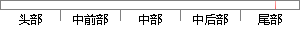

创建一个优先级为5的任务，每次打印自己的信息后延时500毫秒，代码如下：
片段位置图

相似结果
相似片段：任务具有相同优先级时会返回一个错误代码函数:alt_... while (1);}/* 打印任务1:每.500毫秒打印一次.../*步骤5:在任务运行前,需要创建任务并向系统注册 ...
| 标题 | 《usosII遇到任务具有相同优先级时_鸣沙_百度空间》 |
| 对比库 | PaperRater云论文库 |
| 网址 | http://hi.baidu.com/sofeng/item/32e17c3d7e62d35b81f1a7e5 |
| 相似率 | 64.29% （轻度抄袭） |
※ 片段修改建议 ※
近似词参考：- 创建：建立 创立
- 自己：本身
- 如下：以下
- 任务：使命 义务
系统自动生成语句：建立一个优先级为5的使命，每次打印本身的信息后延时500毫秒，代码以下：
注：本片段修改建议为系统自动生成，仅供参考。